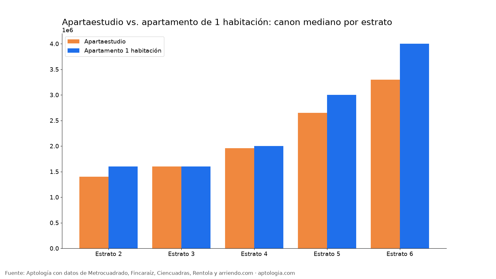

Apartaestudio o apartamento de 1 habitación en Bogotá: precio, área y m² por estrato (2026)
Estudio con datos abiertos (CC BY 4.0). Versión original: https://www.aptologia.com/estudios/apartaestudio-vs-apartamento-1-habitacion-bogota · DOI: 10.5281/zenodo.23343349
En Bogotá, un apartamento de 1 habitación cuesta en la mediana $2.400.000 al mes y un apartaestudio $1.950.000: $450.000 más. El de 1 habitación tiene 40 m² frente a 31 m² del apartaestudio, y por m² el apartaestudio sale a $63.462 contra $62.500.
Resumen: comparamos 2.359 apartaestudios y 4.541 apartamentos de 1 habitación en arriendo, únicos, en Bogotá.
Actualizado: 13 de octubre de 2026 · Próxima actualización: mensual.

Por estrato
| Estrato | Tipo | Canon mediano | Área mediana | Por m² | Avisos |
|---|---|---|---|---|---|
| 2 | Apartaestudio | $1.400.000 | 30 m² | $45.000/m² | 65 |
| 2 | Apartamento 1 habitación | $1.600.000 | 36 m² | $42.353/m² | 61 |
| 3 | Apartaestudio | $1.600.000 | 30 m² | $53.846/m² | 745 |
| 3 | Apartamento 1 habitación | $1.600.000 | 31 m² | $52.000/m² | 1.088 |
| 4 | Apartaestudio | $1.960.000 | 31 m² | $63.333/m² | 919 |
| 4 | Apartamento 1 habitación | $2.000.000 | 36 m² | $59.816/m² | 1.531 |
| 5 | Apartaestudio | $2.650.000 | 38 m² | $72.000/m² | 279 |
| 5 | Apartamento 1 habitación | $3.000.000 | 48 m² | $66.000/m² | 683 |
| 6 | Apartaestudio | $3.300.000 | 40 m² | $87.047/m² | 351 |
| 6 | Apartamento 1 habitación | $4.000.000 | 56 m² | $78.571/m² | 1.178 |
Cómo usarlo para decidir: si vives solo y tu presupuesto está cerca de $1.950.000, el apartaestudio te ahorra unos $450.000 al mes; si trabajas desde casa, la habitación separada suele valer la diferencia por los 9 m² extra.
Preguntas frecuentes
¿Qué es más barato, un apartaestudio o un apartamento de 1 habitación? En la mediana, el apartaestudio ($1.950.000) frente a $2.400.000 del apartamento de 1 habitación en Bogotá, corte al 13 de octubre de 2026.
¿Cuántos metros tiene un apartaestudio en Bogotá? La mediana es 31 m²; un apartamento de 1 habitación tiene 40 m².
¿Cuál sale más caro por metro cuadrado? El apartaestudio: $63.462/m² frente a $62.500/m².
Metodología
- Fuente: base de ingesta diaria de Aptología, con avisos públicos de Metrocuadrado, Fincaraíz, Ciencuadras, Rentola y arriendo.com. Corte al 13 de octubre de 2026.
- Filtros: avisos vivos que pasan el control de calidad, en Bogotá, canon entre $400.000 y $30.000.000. Se excluyen TikTok y Facebook Marketplace.
- Duplicados: se deja un aviso por grupo de duplicados (el mismo inmueble en varios portales).
- Tipos: apartaestudio según el portal; apartamento de 1 habitación = tipo apartamento con 1 habitación. Celdas con 15 avisos o más.
- Limitaciones: son precios pedidos, no cerrados. Los barrios y localidades vienen tal como los escribe cada portal.
- Datos abiertos: datos.csv, licencia CC BY 4.0.
Cómo citar
Pinzón Pineda, D. M. (2026). Apartaestudio o apartamento de 1 habitación en Bogotá: precio, área y m² por estrato (2026). Aptología. https://www.aptologia.com/estudios/apartaestudio-vs-apartamento-1-habitacion-bogota. Datos: datos.csv, licencia CC BY 4.0.